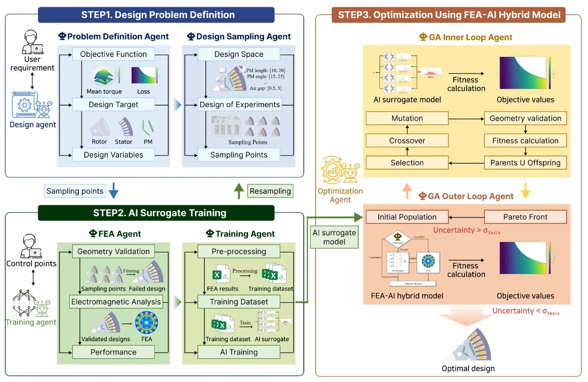

- Paper of Distinction · IDETC 2026
- arXiv
- Live demo
01 Multi-Agent based Parametric Motor Design Optimization
LLM agents define the optimization problem, repair the design space, train an uncertainty-aware surrogate and run an FEA–AI hybrid optimizer that calls FEA only where the AI is unsure — end to end.
- 28 → 84%
- valid-geometry sampling after agentic design-space repair
- −44%
- iron loss vs. FEA-only search, same FEA budget (up to)
- −52–55%
- compute time, keeping 90–92% of FEA-only hypervolume